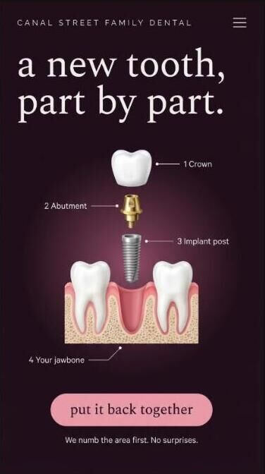
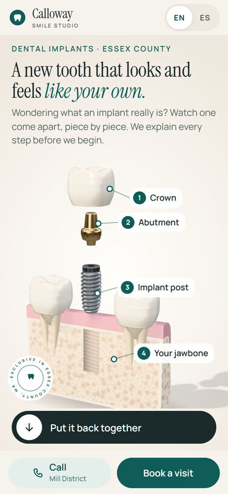

Swipe for 1 more picture →
A A new tooth, part by part (implant take-apart) my pick
Why: The crown lifts, the abutment rises, the post unscrews out of the bone, then it all screws back and clicks home. It turns the most expensive, scariest treatment into something a patient understands in 5 seconds, and it's the moment you liked most. Already built in 3D (second picture is the real one running), so it only needs the v3 plum skin.
Evidence: Your reaction to the first demo ('shows you the service and explains it'); no dental site in the research does this (0 of 16 dental ideas had a real example).
Trade-off: Speaks to implant patients, a smaller group than everyone with a cavity. Heaviest of the four on a phone (3D), though it ran at 60 fps on a real GPU.